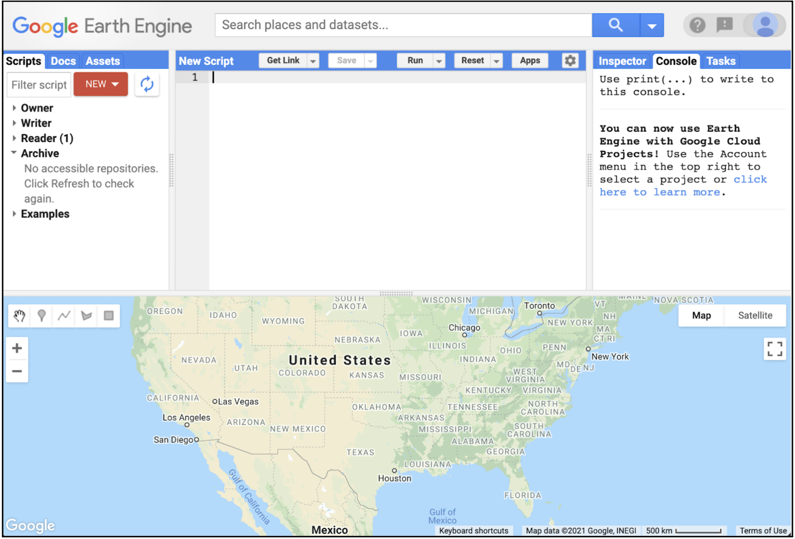
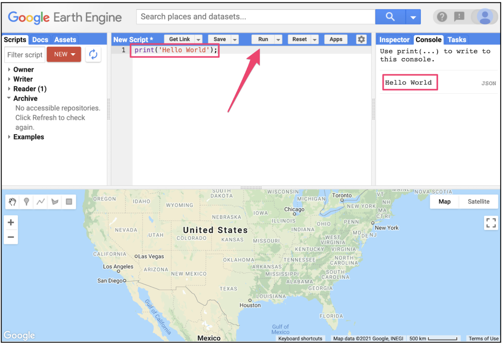
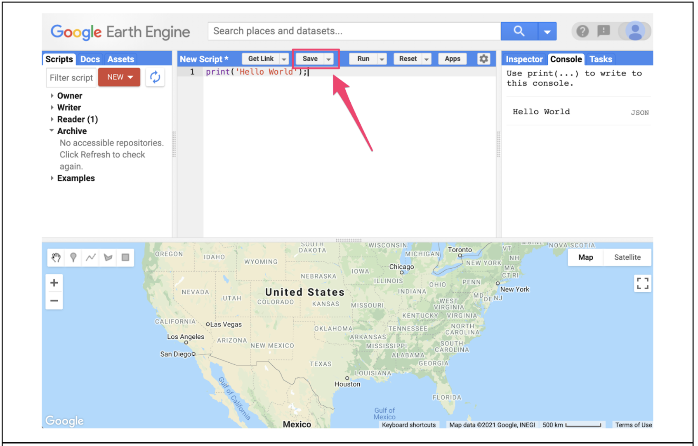
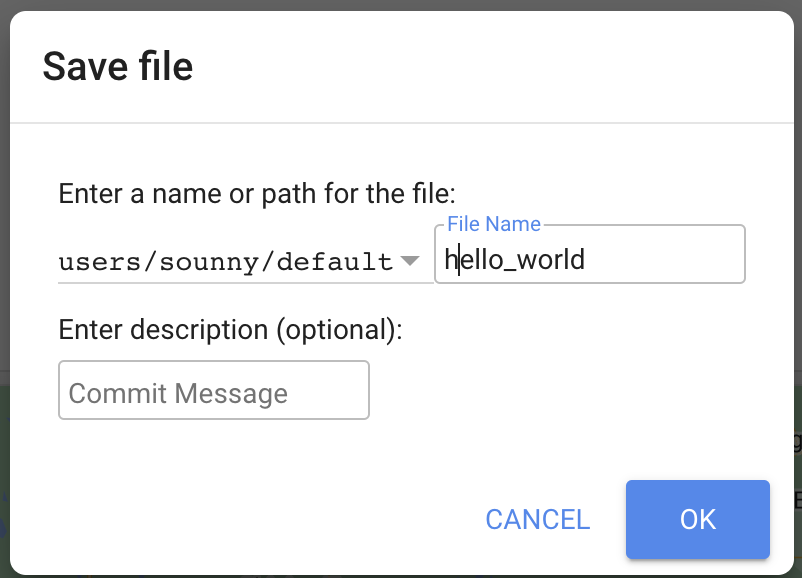
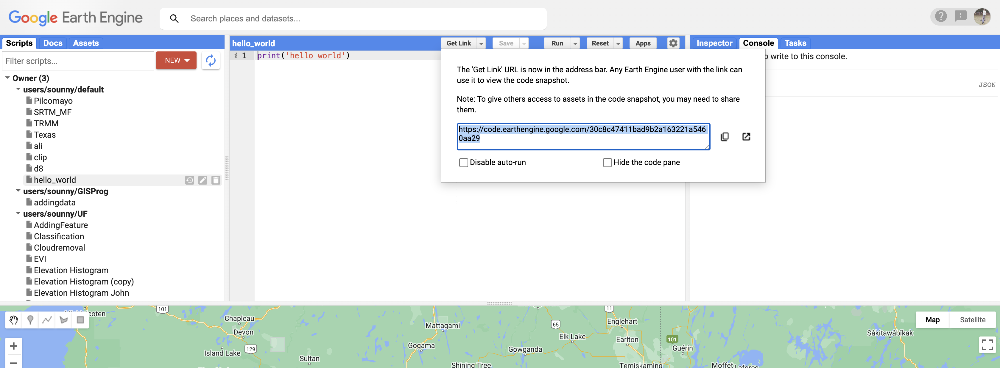

Objective: Get setup with GEE and learn how to submit future labs.
Introduction
In this course, we will use Earth Engine, and you will need to develop skills in both remote sensing
and programming. The language of this course is JavaScript.
The Code Editor is an integrated Earth Engine JavaScript API development environment. It offers an easy way to type, debug, run, and manage code.

The Google Earth Engine Code Editor Interface
Part 3 - Coding
When first learning a new language and getting used to a new programming environment, it is customary
to make a program to display the words "Hello World." This is a fun way to start coding that shows you
how to give input to the program and how to execute it. It also shows where the program displays the output.
Doing this in JavaScript is quite simple.
Type the following code into line one of your script:
print('Hello World');
The line of code above uses the JavaScript print function to print the text "Hello World" to the screen.
Once you enter the code, click the Run button. The output will be displayed on the upper
right-hand panel under the Console tab.

Hello World output in the Console
Part 4 - Save your Code
You just wrote your first Earth Engine script and may want to save it. Click the Save button.

The Save button in the Code Editor
If this is your first time using the Code Editor, you will be prompted to create a home folder.
This is a folder in the cloud where all your code will be saved. You can pick a name of your choice, but
remember that it cannot be changed and will forever be associated with your account. A good choice for the
name would be your Google Account username.
Once your home folder is created, you will be prompted to enter a new repository. A repository
can help you organize and share code. Your account can have multiple repositories and each repository can
have multiple scripts inside it. To get started, you can create a repository named "default".
Finally, you can save your script inside the newly created repository. Enter the name "hello_world" and
click OK.

Saving your first script
Once the script is saved, it will appear in the script manager panel. The scripts are saved in the cloud
and will always be available to you when you open the Code Editor.
Part 5 - Share your Code
Click on the Get link button. This will generate a URL for your code.

The Get Link button allows you to share your code